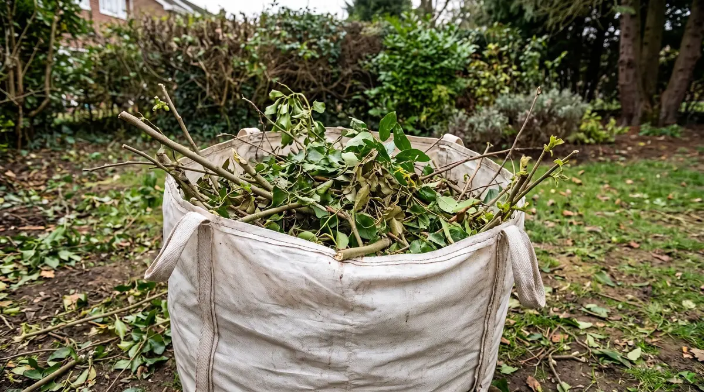

Mantenimiento de jardines en Zaragoza
Cuidamos el jardín de su chalet o de su comunidad con visitas programadas, para que usted no tenga que pensar en él.



Qué incluye
- Siega y perfilado del césped.
- Recorte de setos y arbustos.
- Poda ligera de árboles pequeños y frutales.
- Revisión y ajuste del riego automático, y arreglo de goteros y aspersores.
- Limpieza de hojas, malas hierbas y restos, que nos llevamos.
Visitas periódicas o trabajos sueltos
Puede contratar visitas cada semana, cada quince días o cada mes, según el tamaño del jardín y la época del año. También hacemos trabajos sueltos: una limpieza a fondo antes del verano, poner el jardín a punto antes de una celebración o cambiar una zona de césped por plantas que necesiten menos agua.
Plantación y reforma
Plantamos árboles, arbustos y césped nuevo, y rehacemos zonas del jardín pensando en el clima de Zaragoza: verano seco, cierzo y heladas. Le aconsejamos especies que aguanten bien y gasten poca agua.
Preguntas frecuentes
¿Cada cuánto conviene la visita?
En primavera y verano el césped crece rápido y suele hacer falta una visita cada una o dos semanas. En otoño e invierno basta con una al mes.
¿Se llevan los restos?
Sí. Al terminar recogemos hojas, ramas y césped cortado y nos los llevamos.
¿Trabajan para comunidades de vecinos?
Sí, tanto para chalets particulares como para zonas verdes de comunidades y urbanizaciones.
Otros servicios
Pídanos presupuesto
Cuéntenos qué necesita y dónde, y le preparamos un presupuesto sin compromiso. Si nos manda una foto, mejor.
Calle Riglos 9, 50012 Zaragoza (España)